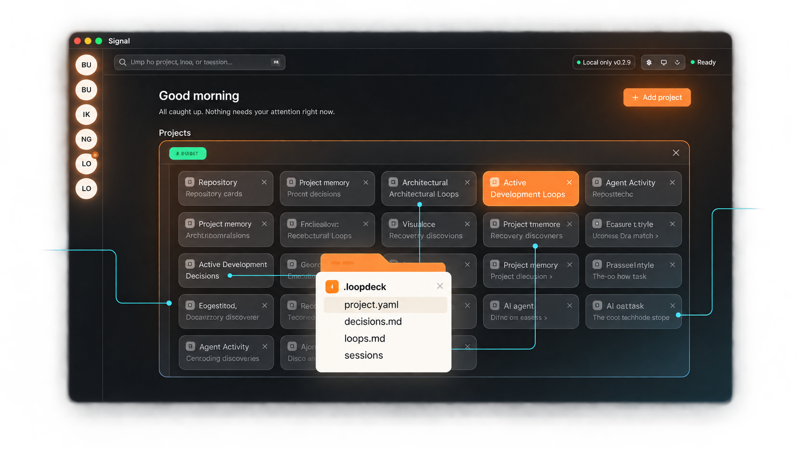

Context that travels
Project descriptions, decisions, and active loops live next to the code — ready for any agent, editor, or teammate.
.loopdeck/decisions.md
Local-first project memory · beta
Selasar gives your repositories a durable memory and your agent a clear next move — without sending your project context to the cloud.
Built for the way developers already work: in the repo.

PROJECT MEMORY · LOCAL ONLY01 / The missing layer
Every new chat starts with the same tax: what is this project, what did we decide, and what happens next? Selasar makes those answers part of the project itself.
Project descriptions, decisions, and active loops live next to the code — ready for any agent, editor, or teammate.
Turn a loose backlog into a focused loop. The agent picks up the first unfinished step and keeps the work moving.
Local files, local registry, local agent runtime. No cloud account required. No new system of record to defend.
02 / The loop
Selasar scans your local workspace for repositories, reads the signals already in them, and gives you one calm view of the work in progress.
03 / A better home for context
Selasar works with the tools you have, not around them. Every decision is diffable. Every loop is portable. Every agent starts closer to the truth.
Read the project README ↗your-repo/project memory04 / Early access
We are building Selasar in the open for developers who want AI to remember the work — not just generate the next reply.
Join on GitHub ↗MIT licensed · local-first · actively evolving